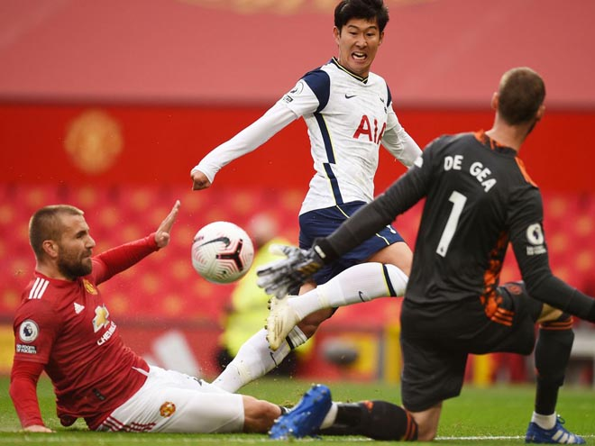

Edinson Cavani sẽ là "mũi dao sắc" trong tay áo của HLV Ole Gunnar Solskjaer trước những trận đấu khó khăn liên tiếp khi MU phải đối đầu PSG và Chelsea trong tháng 10.
Sau thảm bại bi đát 1-6 ngay trên sân nhà Old Trafford trước Tottenham, vấn đề chiêu mộ tân binh của MU càng được dư luận chú ý. Rạng sáng 6/10 (giờ Việt Nam) - ngày cuối cùng của thị trường chuyển nhượng Hè 2020, "Quỷ đỏ" đã công bố đồng loạt 3 bản hợp đồng mới là hậu vệ trái Alex Telles, tiền đạo Edinson Cavani và tiền vệ chạy cánh phải Facundo Pellistri.
